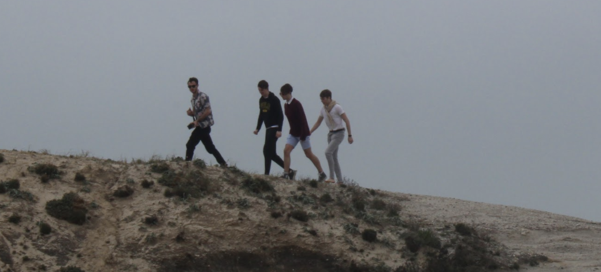
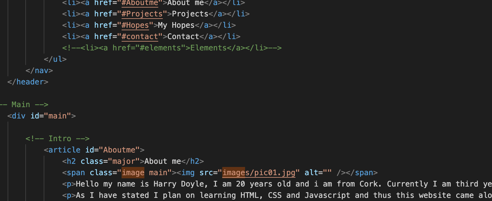

Hello! I am currently a software engineer with Ericsson. I have a Bachelors and Masters degree Computer Science from Trinty College Dublin. Check out the below tags to learn more about me or follow along with my current projects
About me

Hello my name is Harry Doyle, I am 25 years old and I am from Cork, living in Dublin. In 2022 I graduated from my Intgerated Masters in Trinity College Dublin doing Computer Science. I have studied many modules varying from telecommunications to software engineering so I have knowledge of both low and high level computer systems. I have experience in mainly high level programming languages such as Java, Python, C and I am planning on learing C#, HTML, CSS and Javascript in my own time soon. But I have also done ARM assembly language, XML, VHDL and others
As I have stated I plan on learning HTML, CSS and Javascript and thus this website came along, a place I could put my learning to test but also a place I could document my progress in other projects for personal use. I hope to continue improving this website and adding new features to it. So if you are interseted keep updated and follow my my LinkedIn .
If you want to follow my progress in my other compouter related projects check out the Projects tab or if you just want to know what I do for fun continue reading here.
I am quite sporty I enjoy playing soccer, golf and tennis. I used to play soccer competitively but I had to give up when i moved to a boarding school that didnt play soccer I also used to do athletics, both long and short distance running and long jump.
I also like being creative like working with wood and doing technical graphics (which is something I plan on getting back into more and possibly doing a few projects) and I think my creativity could have lead to my enjoyment for programmming, I find it fascinating finding the differnet ways of working around a problem and implementing them in my concept.
Another thing I love that stemmed my love for Computer Science, is my love for travelling I have lived in many differnent countries such as Barbados and St. Lucia. The possibilty of working remotely and travelling to new countries really appeals to me.
Time Series Forecasting
In my module for Software Engineering project, 6 classmates and I were tasked with creating a time series forecasting software for our client Microsoft. This was my first time using Python and also programming a fully functional webapp so i faced may new learning adventures.
My first task was of course to learn the Python language and learn how its syntax worked, once i saw how easy and satisying Python was to work in I knew it was going to quickly become my go to langauge. I plan on doing more personal Python projects in my own time.
My next task was to learn what time series forecasting was and what it involved, Time series forecasting is the use of datasets to predict the value of a given element at a future date. This was my first time working with a large dataset and first time doing a data science project and i knew immediately i was goiong to face some severe challenges.
My main focus in this project was to develop a Support Vector Regression (SVR) model. SVR tries to find a line in space that seperates the dataset and predicts the asked value by seeing if the points fall on the negative or positive side of the line
This Website

I really wanted to learn HTML and CSS, so idecide for my first personal project I decided I would create a portfolio website where friends and colleagues could check out my projects and follow along with the developemnt of them.
This website is still under going changes and I hope to maybe implement some cool features by using Javascript. I began by experimenting with pure HTML and CSS seeing what effects you could program. Once i got the hang of it I started trying to implement them into a nice and responsive design but struggled in making one so i got this template of HTML5up, however i do plan on creating my own template once I am ready and fully understand CSS. I also want to learn Javascript and create new animations and effects to use in the website, so stay tuned to see what I have done.
Currently I currentl am a software engineering. I really enjoy programming in high level langauges and using object orientated programming to make interesting programs and algorithms. I hope to further develop my skills as a software engineer in the coming future.
Web Design
In the begins of the website i really enjoyed it but struggled with a few things but was able to overcome them but i am going to hvae to wait and see if i enjoy improving and maintaining this website enough to consider it as a career path.